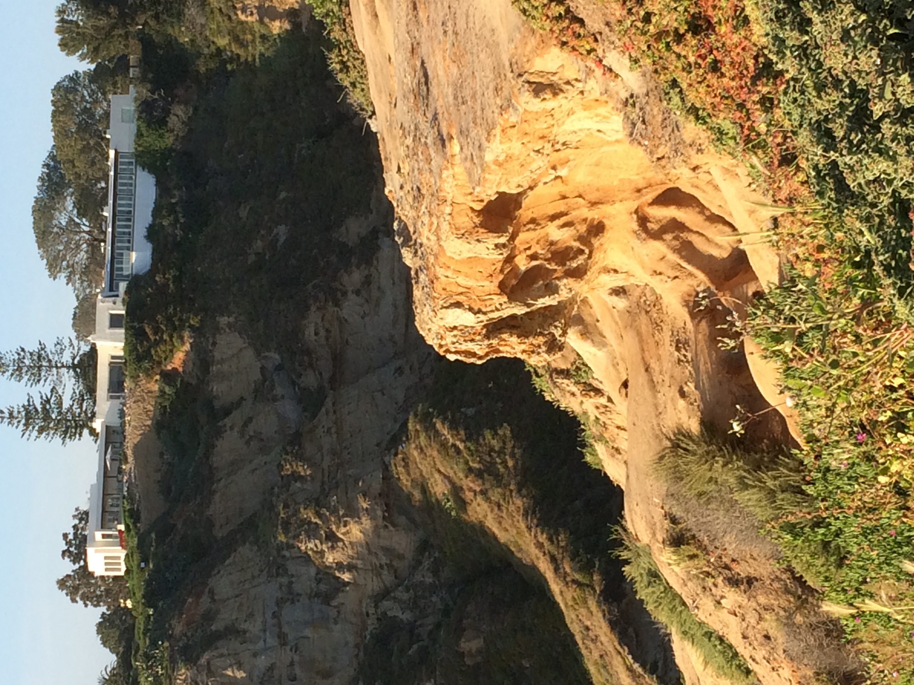
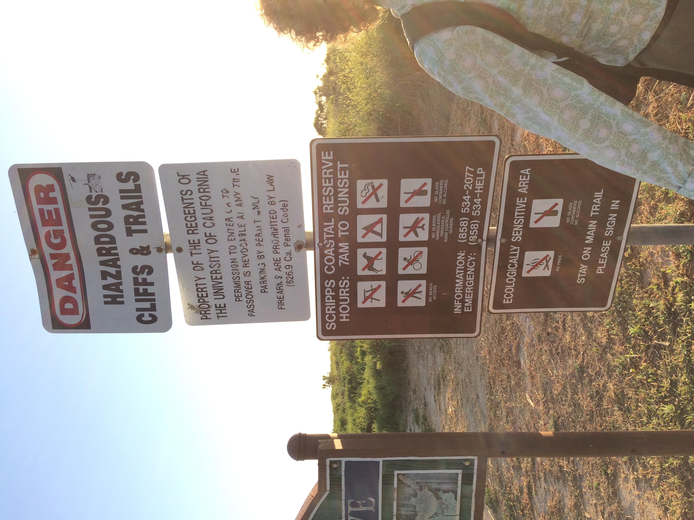
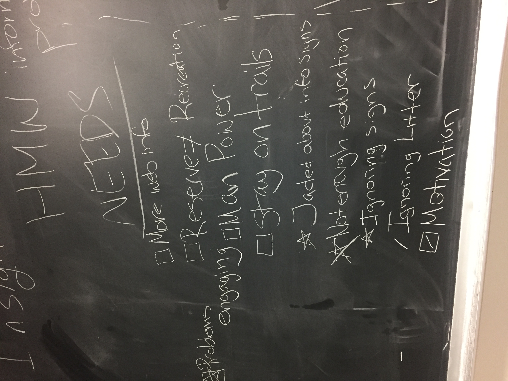
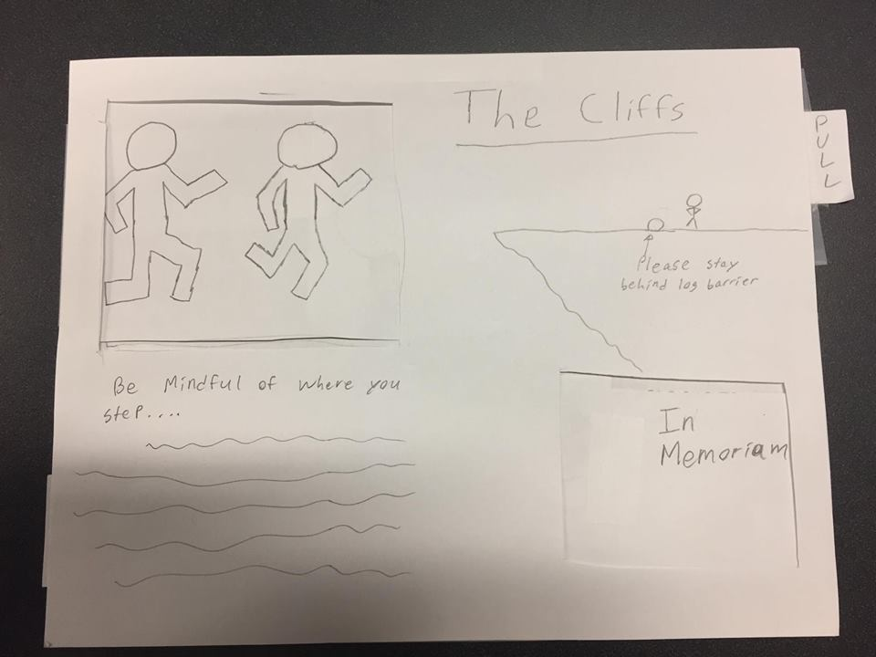
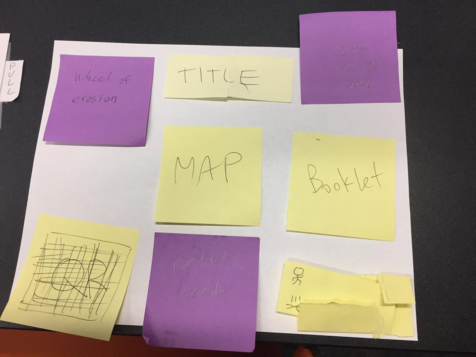
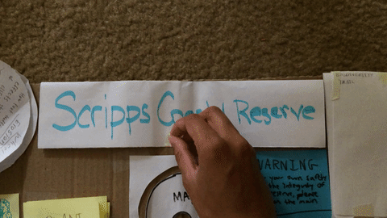
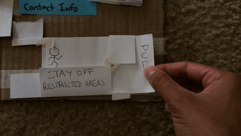
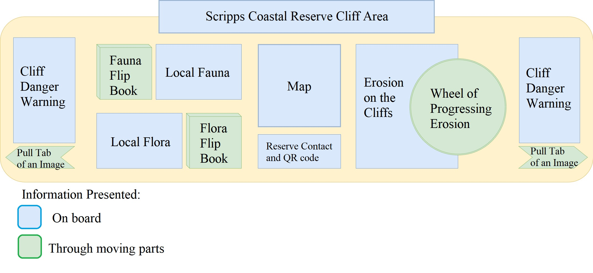

These are the slides we presented to the class during final project presentations.
About
The Scripps Interactive Infoboard Prototype was our design solution for Scripps Coastal Reserve, a protected coastal area in La Jolla. In this project, we indentified a design problem of the reserve and came up with a solution using the Double Diamond process. We also individually wrote papers about how we went about the process as well as what we found.
This project was a part of COGS 102C: Cognitive Design Studio, where we worked in teams of 6 to identify a design problem on any of the given topics related to the environment. The other members of my team include Kristin Vu, Jonathan Marcelo, Ricky Lieu, Austin Gelb, and Shuo Ma.
Design Process
Understand
- To identify user needs, we conducted interviews with local beachgoers as well as experts Kara Powell (President of the Sierra Club) and Isabelle Kay (Academic Coordinator of the Reserve System). On our interview with Ms. Kay, we also walked around the entire trail at Scripps, observing the area, the visitors, and the different plant and animal species.

The undercut at the cliff area was caused by erosion.
|

We found that these 4 warning signs/rules at the beginning of the trail were easy to overlook.
|
- We also conducted an online survey asking if people were interested in the signs at the trail. Although most of them said yes, they also said that they don't even stay on the trail, even though they aren't supposed to.
- On top of user research, we also conducted secondary research. Through this, we found that trampling from going off-trail causes erosion, which leads to collapsing cliffs.
Create
- After gathering our research, we identified needs and collaboratively listed ideas to fulfill these needs.

We discussed needs and ideas using a blackboard.
- The three features we looked for in our ideas were attractiveness, engagement, and impact. We weighted these features for each of our ideas and found that seed packets and an infoboard scored the highest. We created multiple iterations of prototypes of these ideas and tested them on users, observing and asking questions.
|

This first prototype of the infoboard was made by my teammate.
|

This was how we planned to create the layout of our next infoboard prototype.
|
- As a result of testing, we decided that a larger infoboard with the interactive parts across its entirety offered the best user experience. We learned that the more important information (i.e. the warnings) should be more apparent and don't need to be interactive. Additionally, the large board doubles as a barrier that prevents visitors from going to restricted areas while still being able to enjoy the cliffs' beautiful views.
 One of the board's interactive elements is a spinning wheel that demonstrates erosion.
One of the board's interactive elements is a spinning wheel that demonstrates erosion.
|

Another element is a flip-up "about" section.
|
 This interactive element is a small booklet showcasing the reserve's plants.
This interactive element is a small booklet showcasing the reserve's plants.
|

Users can pull the tab in this element to see an example what happens when they don't follow the warnings.
|

Finally, here is a diagram of our prototype taking into account feedback from user testing.
Conclusion
Most of my design experience is on UI, so designing a physical product was new to me. It was intimidating at first to start off with absolutely nothing, but I became more relieved knowing that we were able to talk to experts about this topic. I'm grateful that I got to work with a team in which we can bounce ideas off of each other. I also enjoyed testing our prototypes as well as testing other teams' prototypes. We all came up with unique solutions for diverse problems that I never would have thought of on my own.
Click on one of the buttons below to view papers related to this project!